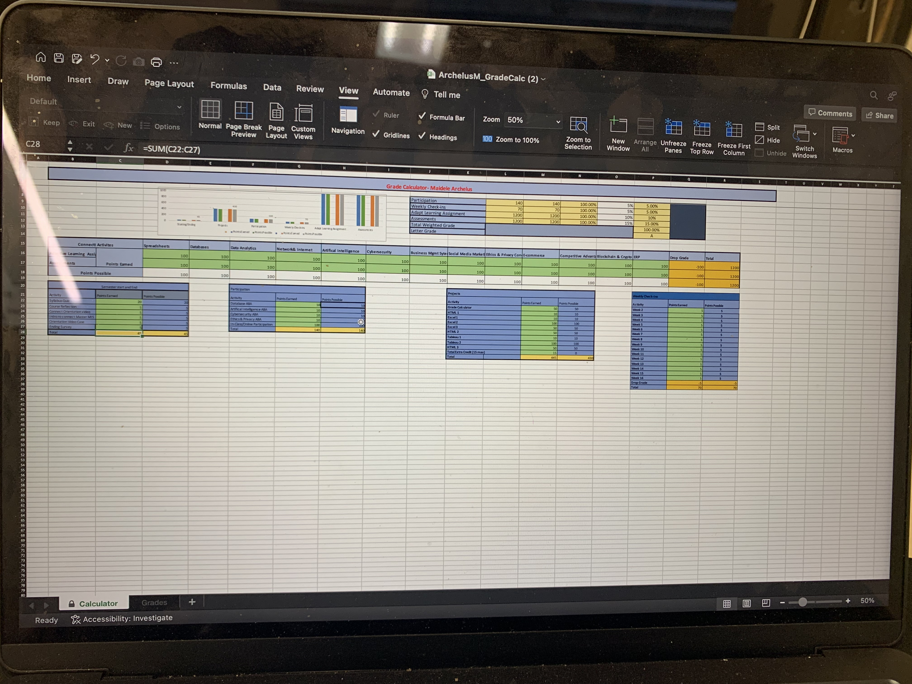

Grade Calculator Project Overview
My name is Maidele Archelus.
The grade calculator project is a project that is completed in Excel for the class "ISM3011." There are seven different charts that are used in this assignment. One of the charts is a graph of the final grades. Another chart is about the activities groups with these groups being categorized by points earned, point possible, % earned, % weight, and the weighted grade. The overall goal of this assignment is to make a spreadsheet to organize and track my grades in the class.
There are other charts regarding participation, projects, weekly check-ins, and the start and end of the activities. All the mentioned charts have columns regarding points earned and points possible. They are categorize differently based on the activities. For example, the participation chart contains activities such as the database ABA, cybersecurity ABA, etc. While the Project chart contains activities regarding excel, HTML, and Tableau.
This project was intended to be completed by following step-by-step instructions. The instructions had 7 parts. The first part included downloading excel and naming the file. The second and third part included setting up the green and blue cells in the worksheet. The fourth and fifth steps includes setting up the yellow numeric and letter grade cells. The sixth step involved the inclusion of the chart and freezing the first three rows. The final step included, checking the results, protecting the worksheet, and submitting the the assignment.
Several Excel formulas, skills, and techniques that were used in this project include:
Utilizing "MIN" function
Utilizing "SUM" function
Utilizing "VLOOKUP" formula
Naming Worksheet tabs
Setting Up Data Validation
Utilizing "IF" function
Adding Textbooks
Freezings Rows in Worksheets
I learned a lot from this assignment. I learned how to make charts in excel and how to set up data validation. I also learned how to freeze data validation in an excel. I learned how to use the "MIN" and "SUM" functions in excel. I was having trouble with the VLOOKUP formula but after attending class and speaking to a Teacher's Assistant, I learned how to correctly do this function. The mistake I was making was forgetting to put the "$" in the formula. Overall, every step this project was useful as it taught me multiple functions that I could use in Excel.
Images

 <
<
Click link to return to my portfolio